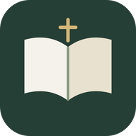

Selah · Windows
말씀을 읽고 묵상을 이어가세요.
Windows 런처가 Selah를 Microsoft Edge의 앱 창으로 엽니다. 앱은 같은 Selah 웹 서비스와 계정 동기화 기능을 사용합니다.
버전 1.0.9 · 런처 build 23
Windows 런처 ZIP 다운로드설치 및 실행
- ZIP 파일을 압축 해제합니다.
Launch-Selah.cmd를 실행합니다.- 선택 사항:
Create-Selah-Desktop-Shortcut.vbs를 실행해 시작 메뉴와 바탕 화면 바로가기를 만듭니다.
Microsoft Edge와 Windows Script Host가 필요합니다. 처음 실행할 때 인터넷 연결이 필요합니다. 회사나 학교 정책으로 Windows Script Host가 차단된 경우에는 공식 Selah 사이트를 Edge에서 직접 여세요.
런처 없이 Edge에 설치하기
Windows 앱 설치 파일 대신 Edge의 기본 앱 설치 기능을 사용할 수도 있습니다. Selah 사이트를 Edge에서 연 뒤 설정 및 기타 (…) → 앱 → 이 사이트를 앱으로 설치를 선택하세요. Edge 앱 목록에서 실행하고 시작 메뉴나 작업 표시줄에 고정할 수 있습니다. 메뉴 문구는 Edge 버전에 따라 달라질 수 있습니다.
기록과 기기 간 이동
같은 BlueCloud 계정으로 로그인하면 지원되는 기록을 Mac과 Windows 사이에서 동기화할 수 있습니다. 로그인 전 기록은 실행한 브라우저 프로필에만 저장됩니다. 계정 동기화를 사용하지 않고 기기를 바꾸려면 기존 기기에서 앱 백업을 내보낸 뒤 새 기기에서 가져오세요. 성경 번역 다운로드는 브라우저별 저장 공간에 보관되므로 다른 기기에서 다시 받아야 합니다.
파일 확인과 문제 해결
다운로드한 파일이 안내된 출시 파일과 같은지 확인하려면 PowerShell에서 다음 명령을 실행하고 결과를 페이지의 SHA-256 값과 비교하세요.
압축을 풀기 전에 Windows에서 파일을 차단하거나 실행을 거부하면, ZIP 이름과 체크섬을 확인하고 조직의 기기 정책을 살펴보세요. 체크섬이 다르면 ZIP을 실행하지 말고 공식 페이지에서 다시 받으세요.
이 파일은 hosted Edge 앱 창 런처입니다. 독립 실행형 EXE/MSIX나 Microsoft Store 패키지가 아닙니다. Store 심사와 등록은 별도 절차입니다.
SixVPNBlocker가 설치되어 있으면 기존 관리형 Edge 확장과 PAC 설정을 사용합니다. 설정이 불완전하면 런처가 중단됩니다. 해당 보호 구성이 없는 PC에서는 일반 Edge 앱 창을 엽니다.
Selah 웹앱 열기 · 소스 코드 · 개인정보 처리방침
English
Selah for Windows
This launcher opens the shared Selah web app in a Microsoft Edge app window. You can also open the official site in Edge and choose Settings and more → Apps → Install this site as an app; menu wording varies by Edge version.
Download the Windows launcher ZIP · SHA-256 checksum
Requires Microsoft Edge, Windows Script Host, and an internet connection for first launch. Run Launch-Selah.cmd after extracting. Optional shortcuts are created with Create-Selah-Desktop-Shortcut.vbs. Anonymous notes stay in the Edge profile. This is a hosted app-window launcher, not a standalone EXE/MSIX or a Store package.